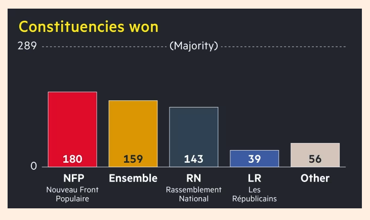

French Election; AI; Investment Banking
French Election result: the left surge
“French leftwing parties jostle to lead new government after unexpected victory”

“The hastily cobbled-together leftist Nouveau Front Populaire bloc won the most parliamentary seats in the second-round vote on Sunday”
“Markets initially reacted negatively to the news of a hung parliament but quickly recovered, with the euro flat and French stocks making gains.”
The leftist bloc: center-left Socialists, communists, and Greens. This includes “the far-left La France Insoumise, led by anti-capitalist firebrand Jean-Luc Mélenchon.” Broken down into the party-level, though, the biggest party is the far right France Unbowed with 74 seats. The Socialists, 59.
Given the uncertainty, major cabinet members, including the prime minister, are asked to remain in their posts.
- The government forming remains a difficult task. The far-left block, for example, is a hard sell to macron: “But Macron and his allies had repeatedly stressed that they would refuse to enter into coalition with Mélenchon. Speaking after last Sunday’s first round, outgoing Prime Minister Gabriel Attal – Macron’s protege, said France Unbowed was preventing the formation of a “credible alternative” to the far right.” CNN article
The left seem to deal with some internal tensions, which is reflected in the comments like: “Mathilde Panot, a high-level figure in Mélenchon’s party, told RTL radio on Monday that the veteran leftwinger was “absolutely not disqualified” for the prime minister job.”
Resurging Investment Banking
“Dealmaking revival expected to boost results for Wall Street banks”
Investment banking fee recovery is expected to boost lenders.
Investment banking revenues at “JPMorgan Chase, Goldman Sachs, Morgan Stanley, Bank of America and Citigroup will on average rise more than 30 per cent from a year earlier during the second quarter.”
Some examples of the resurgence of deal-making: “ExxonMobil’s $60bn acquisition of Pioneer Natural Resources in May, which was brokered by Citigroup, Goldman and Morgan Stanley, and Aon’s $13bn purchase of insurance broker NFP in April, which was guided by Citi and BofA, among others.”
The background is that the investment banking revenues had fallen in 2023 from record highs in 2021. The interest rates are to blame. For that reason, though, the current resurgence may fall short of reaching the 2021 level because the peak was made possible through the low interest rates and Covid stimulus.
- Perhaps the reflection of the private equity funds’ activities?
The disappointing economic effect of AI (revolution)
What happened to the artificial-intelligence revolution?
“[F]or ai to fulfil its potential, firms everywhere need to buy the technology, shape it to their needs and become more productive as a result.”
- Most ‘say’ they use AI in their business, but often for marginal tasks. More over, the surveys on this subjects remain limited to a few very slective companies. “[T]he incorporation of ai into business processes remains a niche pursuit.”
- In surveys on a more representative sample, a single-digit percentage of respondents say they us AI for business purposes.
The obstacles? “Concerns about data security, biased algorithms and hallucinations are slowing the roll-out.”
Most important, the AI use does not seem to have impacts in the economic outputs, reflected in the labor market.
- “there is no sign in the macroeconomic data of a surge in lay-offs.” (but one needs to consider that the labor market is currently very strong.)
- Workers are not moving between companies faster than usual, either. (All these numbers are focused on white-collar jobs. But AI may more quickly replace blue-color jobs?)
- There doesn’t seem to be any surge in productivity or capital investment either.
Must of what is suggested here is looking at the very last node of the AI revolution and its impact on the economy. So a bit too early to declare the lack of signs?